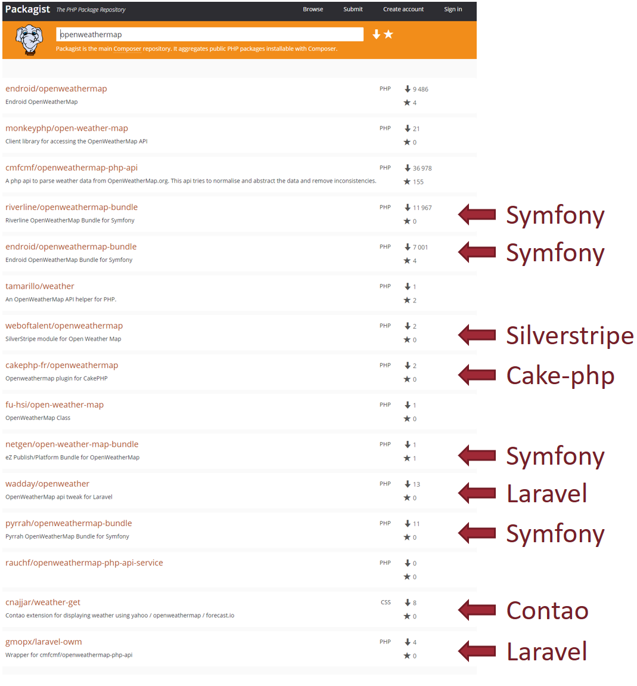

class: center, middle, inverse # Ecrire du code PHP *framework-agnostic* : aujourd'hui et demain --- class: center, middle # *Framework-agnostic* # = # .highlight1[Indépendant du framework] --- # David Négrier - Co-fondateur et directeur technique de - Lead developer de - Lead developer de **Packanalyst** - Co-editeur de container-interop et de la **PSR-11** .large-img[] --- class: center, middle # Du code *framework-agnostic*... # Pour quoi faire? ??? Dans cette présentation, on va beaucoup parler de code framework agnostic, c'est à dire de code qui est indépendant du framework. Du coup, la première question que vous vous posez peut-être, c'est pourquoi faire? Vous allez me dire, David, ça à l'air compliqué ton truc là, je peux pas faire un bundle Symfony plutôt? --- class: center, middle # L'ennemi: .highlight2[la fragmentation] ??? On a tous un ennemi commun: c'est la fragmentation. Cette fragmentation s'exprime de manière différente suivant que vous être auteur de framework, auteur d'un paquet ou développeur d'une application. --- class: middle ## - Je suis auteur d'un paquet open-source # .center[La fragmentation est .highlight2[mon ennemie]] ??? Tiens, je vais développer un bundle Symfony.... un module Wordpress, un plugin Drupal, un module Zend Framework.... A chaque fois que je fais ce choix, je deviens développeur Symfony / développeur Wordpress... Mon paquet perd potentiellement une audience bien plus large, celle des frameworks PHP Pour les auteurs de paquets open-source, la fragmentation, c'est une audience moindre pour mon code. --- class: middle ## - Je suis auteur d'un paquet open-source ## - Je suis auteur d'un framework # .center[La fragmentation est .highlight2[mon ennemie]] ??? Est venez les gens! J'ai fais un super nouveau framework, il va tout déboiter. Chances de réussites? 0 Parce que tous les développeurs de la communauté sont occupés à faire des bundles Symfony ou des modules Wordpress. Conclusion: moins de concurrence, moins d'innovation Et c'est même un problème pour les frameworks établis puisqu'ils doivent lutter contre eux même lors de versions majeures (cf Drupal 7 => Drupal 8) --- class: middle ## - Je suis auteur d'un paquet open-source ## - Je suis auteur d'un framework ## - Je suis développeur et j'utilise un framework # .center[La fragmentation est .highlight2[mon ennemie]] ??? Même problème. Vous ne pouvez pas utiliser un module d'un framework concurrent. Du plus, votre propre code, s'il est trop attaché à un framework va être impossible à migrer. En bref, on est tous concernés par ce soucis de fragmentation de l'écosystème PHP. Alors pour cette présentation, je vais vous demander de vous projeter dans le cas n°1, on va faire comme si vous étiez un auteur de paquet. Par curiosité, combien de personnes ont un compte sur Github ici, utilisé sur un projet open-source? --- class: center, middle # Ca y est, vous l'avez fait, vous avez écrit votre premier package! --- background-image: url(images/kermit_keyboard.gif) background-position: center background-repeat: no-repeat background-size: contain --- class: center, middle # Je vais le partager avec le monde entier!   --- background-image: url(images/kermit_happy.gif) background-position: center background-repeat: no-repeat background-size: contain --- class: center, middle # 2 cas possibles --- class: center, middle # Cas 1: mon paquet est simple --- ## friendsofjs/leftpad ```php namespace So\Useful; class Utils { public static function leftPad($string, $length, $filler = ' ') { return str_pad($string, $length, $filler, STR_PAD_LEFT); } } ``` --- ## friendsofjs/leftpad 1. J'inclus mon paquet dans n'importe quel projet ``` composer require friendsofjs/leftpad ``` 2. J'utilise, c'est gagné! ```php echo Utils::leftPad('42%', 4); // " 42%" ``` --- class: big-text ## friendsofjs/leftpad <p> </p> <p> </p> <p> </p> <p> </p> .center.middle[Ce paquet est déjà *framework agnostic*, thanks to **Composer** and **PSR-4** (autoload).] --- class: big-text ## friendsofjs/leftpad <p> </p> <p> </p> <p> </p> <p> </p> .center.middle[Mais pas très utile...] --- class: center, middle # Cas 2: Mon paquet est plus complexe --- ## l33t/weatherapi .full-width[] --- class: center, middle, big-text Ok, donc j'ai besoin d'un client HTTP pour faire une requête... --- class: center, middle, big-text - curl? ??? Curl? Mais la gestion des erreurs sous Curl est tellement galère... --- class: center, middle, big-text - Guzzle? --- class: center, middle, big-text - Guzzle 5? - Guzzle 6? ??? J'ai bien envie de prendre la dernière version mais j'ai ce projet qui utilise encore Guzzle 5 et je ne pourrais pas utiliser mon paquet dans ce projet sans migrer Guzzle... --- class: center, middle, big-text - Zend-HTTP? --- class: center, middle, big-text - React HTTP client? --- background-image: url(images/kermit_groumpf.gif) background-position: center background-repeat: no-repeat background-size: contain --- class: center, middle, big-text Et j'ai besoin d'une librairie pour les logs aussi! --- class: center, middle, big-text - `fopen`, `fwrite`? ??? Et si je veux loguer autre part que dans un fichier? --- class: center, middle, big-text - Monolog? --- class: center, middle, big-text - cakephp/log? --- class: center, middle, big-text - joomla/log? --- class: center, middle, big-text - vespula/log? --- background-image: url(images/kermit_think.gif) background-position: center background-repeat: no-repeat background-size: contain --- class: center, middle # Stop! --- class: center, middle ## Il faut éviter de dépendre d'une .highlight2[implémentation] particulière. ## Partout où c'est possible, préférer une .highlight1[abstraction]. --- # Il nous faudrait une boite noire... .large-img[] --- class: center, middle ## En programmation orientée objet # .highlight1[Abstraction] # = # Boite noire # = # .highlight3[Interface] --- # HTTPlug ```php interface HttpClient { /** * Sends a PSR-7 request. * * @param RequestInterface $request * * @return ResponseInterface * * @throws \Http\Client\Exception If an error happens during processing the request. * @throws \Exception If processing the request is impossible (eg. bad configuration). */ public function sendRequest(RequestInterface $request); } ``` --- # PSR-3 ```php interface LoggerInterface { /** * Logs with an arbitrary level. * * @param mixed $level * @param string $message * @param array $context * * @return void */ public function log($level, $message, array $context = array()); public function emergency($message, array $context = array()); public function alert($message, array $context = array()); public function critical($message, array $context = array()); public function error($message, array $context = array()); public function warning($message, array $context = array()); public function notice($message, array $context = array()); public function info($message, array $context = array()); public function debug($message, array $context = array()); } ``` --- # Il nous faut des interfaces! .large-img[] --- # l33t/weatherapi **composer.json** ```json { "name": "l33t/weatherapi", "require": { "php-http/client-implementation": "^1.0", "psr/log": "^1.0", "psr/cache": "^1.0" } } ``` --- class: center, middle, big-text Si je veux utiliser des interfaces, .highlight2[je ne suis pas responsable] de l'instantiation des objets. ??? Souvenez vous, mon composant voit une boite noire, ça signifie que mon composant ne sais pas à qui il parle. Il ne peut pas être responsable de l'instantiation du logger ou du cache ou du client HTTP. Mais si je n'ai pas d'implémentation, comment écrire mon paquet? --- ```php namespace L33t\WeatherApi; use Http\Client\HttpClient; use Psr\Cache\CacheItemPoolInterface; use Psr\Log\LoggerInterface; class WeatherApi { private $httpClient; private $logger; private $cache; private $apiKey; public function __construct(HttpClient $httpClient, LoggerInterface $logger, CacheItemPoolInterface $cache, string $apiKey) { $this->httpClient = $httpClient; $this->logger = $logger; $this->cache = $cache; $this->apiKey = $apiKey; } public function getWeather(string $countryCode, string $cityName) : Weather { // Do stuff... } } ``` ### Pro-tip: c'est ce qu'on appelle l'injection de dépendance --- background-image: url(images/kermit_yay.gif) background-position: center background-repeat: no-repeat background-size: contain --- class: center, middle, inverse # Intermède: cartographie de l'intéropérabilité --- # Les composants type d'un framework .very-large-img[] --- # Les composants type d'un framework .very-large-img[] --- # Les composants type d'un framework .very-large-img[] --- # Les composants type d'un framework .very-large-img[] ??? Mettre l'accent sur les manques, notamment l'absence d'interface pour le rendering => si j'ai un composant dans une page web que je veux intégrer dans un template, je ne sais pas comment faire. --- class: center, middle, inverse # Fin de l'intermède: retour à L33t/WeatherAPI --- class: center, middle ## .highlight2[Je ne suis pas responsable] de l'instantiation des objets. --- class: center, middle ### Si .highlight2[je ne suis pas responsable] de l'instantiation des objets... # .highlight1[qui est responsable???] --- class: center, middle  # .highlight2[L'utilisateur du package!] --- J'ai déporté une partie de la complexité du code **sur l'utilisateur** de ma classe. **composer.json** ```json { "require": { "l33t/weatherapi": "^1.0", "guzzlehttp/guzzle": "^6.0", "php-http/guzzle6-adapter": "^1.1", "monolog/monolog": "^1.9", "tedivm/stash": "^0.14" } } ``` **file.php** (le *glue code*) ```php $guzzle = new GuzzleClient([]); $httplugAdapter = new GuzzleAdapter($guzzle); $logger = new Logger('my_logger'); $logger->pushHandler(new StreamHandler(__DIR__.'/my_app.log', Logger::DEBUG)); $driver = new Stash\FileSystem(); $cache = new Stash\Pool($driver); $weatherApi = new WeatherApi($httplugAdapter, $logger, $cache); $weather = $weatherApi->getWeather('fr', 'Paris'); ``` ??? Maintenant, c'est de la responsabilité de l'utilisateur de savoir quels paquets importer. Surtout, c'est de sa responsabilité d'instancier les objets (donc de connaitre le fonctionnement des libs qu'il a choisit comme Stash, Monolog, etc...) Qu'est ce que ce "glue code" contient? => des classes connecteurs (censées disparaître avec les PSR interfaces) => de la configuration de conteneurs --- class: center, middle, big-text Dans la vraie vie, chaque .highlight1[service] est en fait configuré et récupéré depuis le .highlight1[conteneur d'injection de dépendance]. --- class: center, middle, big-text Dans la vraie vie, l'utilisateur est .highlight1[fainéant] et n'aime pas configurer le conteneur d'injection de dépendance. --- class: center, middle, big-text Dans la vraie vie, l'utilisateur .highlight1[utilise un module tout fait] pour injecter les services dans le conteneur. --- class: center, middle ## C'est .highlight1[votre responsabilité] d'être gentil avec l'utilisateur et de lui fournir un module. --- ## l33t/weatherapi + modules associés .large-img[] --- class: center, middle ## C'est .highlight2[votre responsabilité] de connaître tous ces frameworks! ??? Question de la responsabilité. Qui est reponsable d'écrire le "glue code"? => pour les gros paquets => c'est le framework author (cf Doctrine) => pour les petits paquets, c'est la responsabilité de l'auteur du framework. --- background-image: url(images/kermit_water.gif) background-position: center background-repeat: no-repeat background-size: contain --- class: center, middle  --- class: center, middle, inverse # Et demain? --- # Maintenant .large-img[] --- # Idéalement .large-img[] --- class: center, middle, big-text Pour arriver à avoir un module unique, il faudrait que ce module soit capable .highlight1[d'écrire dans les containers] de tous les frameworks existants... --- class: center, middle, big-text Mais tous les containers sont .highlight2[très différents]! --- class: center, middle, big-text Mais tous les containers sont .highlight2[**très très différents**]! --- # Pimple (utilisé par Silex) ```php $container[WeatherApi::class] = function(Pimple $container) { return new WeatherApi($container[HttpClient::class], $container[LoggerInterface::class], $container[CacheItemPoolInterface::class], $container['openWeatherMapApiKey'] ); }; ``` ??? Bon, bein c'est facile avec Pimple. Ca ressemble à un setter, on a qu'à faire une méthode "set" dans tous les containers. Nan! Il y a plein d'endroits ou un set n'est pas envisageable. Déjà, plus vous faites de "set", plus vous ralentissez votre appli => une appli avec 1000 services va devenir très lente si je dois appeler 1000 "set" (même si je n'instantie pas les services à chaque appel) --- # Symfony **services.yml** ```yml services: weatherApi: class: L33t\WeatherApi\WeatherApi arguments: [@httpClient, @logger, @cache] ``` ??? C'est pour ça que certains containers, comme Symfony sont "compilés" et sont configurables via fichier de config (montrer un services.yml) --- # Mouf .full-width[] ??? D'autres containers sont carrément graphiques (Mouf) et n'ont pas de méthode set non plus... Le truc important, c'est que la manière de configurer un container est ce qui fait qu'un container est différent d'un autre. Donc il ne faut surtout pas standardiser cette partie, sinon, on tue la diversité. --- class: center, middle ## Alors on a cherché... ??? Donc on a cherché... Je ne vais pas rentrer dans les détails mais on a d'abord essayé de rendre les containers compatibles entre eux pour pouvoir les faire fonctionner côte à côte. Ca marche pas mal, mais ça ne permet pas facilement d'étendre un service. Ensuite, on a cherché un format de fichier de services unifié. Genre services.yml, mais standardisé. Mais problème du choix du format: JSON? (simple mais pas de commentaires) YML? XML? (puissant mais complexe) Même dans Symfony, ils ne font pas de choix. Et pour mettre tout le monde d'accord, c'est impossible.... Alors on s'est dit, on va travailler sur des interfaces PHP qui représentent le fichier de configuration (comme ça on a pas besoin de choisir un format)... c'est possible, mais c'est galère. Et puis, ça demande pas mal de code, et les interfaces sont vraiment complexes.... On a continué à chercher et un jour, Matthieu Napoli a eu cette idée.... --- class: center, middle, inverse # Service provider universel --- # Les *service-providers* Un service provider est une classe qui inscrit des services dans le container. **Dans *Laravel*** ```php class LaravelWeatherApiServiceProvider extends ServiceProvider { public function register() { $this->app->singleton(WeatherApi::class, function ($app) { return new WeatherApi($app->make(HttpClient::class), $app->make(LoggerInterface::class), $app->make(CacheItemPoolInterface::class), config('openWeatherMapApiKey') ); }); } } ``` --- # Les *service-providers* Un service provider est une classe qui inscrit des services dans le container. **Dans *Silex*** ```php class SilexWeatherApiServiceProvider implements ServiceProviderInterface { public function register(Container $app) { $app[WeatherApi::class] = $app->share(function() use ($app) { return new WeatherApi($app[HttpClient::class], $app[LoggerInterface::class], $app[CacheItemPoolInterface::class], $app['openWeatherMapApiKey'] ); }); } } ``` ??? Vous voyez le problème? Ces 2 services providers lisent depuis le container pour récupérer leur dépendances. Et ces 2 services providers écrivent dans le container. Puis dire qu'on a besoin de 2 choses... une fonction pour get et une fonction pour set. La fonction pour get, c'est facile: container-interop et PSR-11 Mettre la slide sur le service-provider finalisé. Pourquoi ça marche? Silex / Laravel, on comprend que c'est pas très compliqué d'écrire un adaptateur. Avec Symfony, on peut écrire une compiler pass. On peut obtenir la liste des services, et créer des "factory" services. Job's done Sans framework, on peut utiliser un container comme Simplex ou Yaco pour récupérer les services! Avec un framework compatible PSR-11, on peut plugguer ce container à côté de notre appli. --- # Récupérer les dépendances? PSR-11! ```php interface ContainerInterface { public function get($id); public function has($id); } ``` --- background-image: url(images/unicorns.gif) background-position: center background-repeat: no-repeat background-size: contain <br/> <br/> <br/> <br/> <br/> <br/> <br/> <br/> <br/> <br/> <br/> <br/> <br/> <br/> <br/> <br/> <br/> <br/> <br/> <br/> # .center.highlight3[PHP-FIG: frameworks playing together] --- background-image: url(images/war_zone.jpg) background-position: center background-repeat: no-repeat background-size: contain # .center.highlight2[PHP-FIG, the past months] --- # La PSR-11, *kesako*? - C'est une interface commune pour les conteneurs d'injection de dépendance. - C'est l'aboutissement du projet `container-interop/container-interop`. - Née à la suite du .highlight3[**Forum PHP 2013**] (merci l'AFUP) - Auteurs: - Matthieu Napoli - David Négrier - et des dizaines de participants - **2.400.000** downloads - **387** paquets dépendants - Pierre angulaire de .highlight1[**Zend-expressive**] et .highlight1[**Slim3**] - .highlight2[**Triviale**] à implémenter pour tous les containers ??? Donc pour la partie récupérer les dépendances, j'ai une solution! Pour la partie "setter une dépendance", c'est beaucoup plus compliqué. Et si on s'en passait? Il nous faut donc une autre manière de faire. --- background-image: url(images/unicorn_party.png) background-position: center background-repeat: no-repeat background-size: contain # .center.highlight1[PSR-11, in REVIEW!] --- # Proposition Retourner une *array* de *factories* (des *callables*), indexée par nom de service. ```php class UniversalWeatherApiServiceProvider implements ServiceProvider { public function getServices() { return [ WeatherApi::class => function(ContainerInterface $container) { return new WeatherApi($container->get(HttpClient::class), $container->get(LoggerInterface::class), $container->get(CacheItemPoolInterface::class), $container->get('openWeatherMapApiKey') ); } ]; } // ... } ``` --- # Dans la pratique - Projet `container-interop/service-provider` - *beta*, ne pas utiliser en production - Consommateurs de l'interface (pour l'instant): - Symfony bridge - Laravel bridge - Simplex (Pimple 3 fork) - Yaco (simple PSR-11 compiled container) --- # Dans la pratique .full-width[] --- class: center, middle, inverse # Demo --- # Etendre des services .large-img[] .center[Comment est-ce que mon service `Twig_Environment` peut connaître mon extension `MyTwigExtension`?] --- # Etendre des services Une méthode *getServiceExtensions* permet d'étendre les services. ```php class UniversalWeatherApiServiceProvider implements ServiceProvider { public function getServices() { return [ MyTwigExtension::class => function(ContainerInterface $container) { return new MyTwigExtension(); } ]; } * public function getServiceExtensions() * { * return [ * Twig_Environment::class => function(ContainerInterface $container, * Twig_Environment $twig) { * $twig->addExtension($container->get(MyTwigExtension::class)); * return $twig; * } * ]; * } } ``` --- # A propos du nom des services .full-width[] --- # A propos du nom des services .full-width[] ??? Une seule solution: - Le nom du service devrait correspondre au *Fully Qualified Class Name* - L'implémentation "principale" devrait être aliasée vers le nom de l'interface. Donc: - *logger* => `Monolog\Logger` - Alias de `Monolog\Logger` vers `Psr\Log\LoggerInterface` Avantages: - Permet une compatibilité avec les containers effectuant de l'*autowiring* --- # Gestion de la configuration ```php class UniversalWeatherApiServiceProvider implements ServiceProvider { public function getServices() { return [ WeatherApi::class => function(ContainerInterface $container) { return new WeatherApi($container->get(HttpClient::class]), $container->get(LoggerInterface::class]), $container->get(CacheItemPoolInterface::class]), * $container->get('openWeatherMapApiKey') ); } ]; } // ... } ``` La configuration peut être stockée dans le conteneur! --- class: center, middle, inverse # Timeline --- # container-interop/container-interop - Déjà utilisable - 2,4 millions de downloads # PSR-11 - Officialisation de `container-interop/container-interop` - Vote d'ici la fin de l'année # container-interop/service-provider - .highlight2[**Beta!**] => v0.3 - Déjà utilisable mais possibles *breaking changes* - *Need help* - Discussions pour une PSR début 2017 ??? On a besoin d'aide autour de container-interop/service-provider. Si vous êtes auteurs de paquets open-source, vous pouvez considérer écrire un service provider universel (attention, ça bouge), mais ça permet de recupérer des feedbacks. Egalement, vous pouvez tenter de créer des adaptateurs entre votre framework préferré et les service providers universels. Enfin, on prend tous les commentaires et toutes les critiques! --- class: center, middle, inverse # Conclusion --- class: center # .left[Créer des paquets *framework-agnostic*] ## Evitez de .highlight2[dépendre d'une implémentation] (si possible) --- count: false class: center # .left[Créer des paquets *framework-agnostic*] ## Evitez de .highlight2[dépendre d'une implémentation] (si possible) ## Soyez conscient des initiatives pour .highlight3[créer des interfaces] (cf Cartographie, PHP-FIG...) --- count: false class: center # .left[Créer des paquets *framework-agnostic*] ## Evitez de .highlight2[dépendre d'une implémentation] (si possible) ## Soyez conscient des initiatives pour .highlight3[créer des interfaces] (cf Cartographie, PHP-FIG...) ## Aujourd'hui: créez un .highlight1[module/bundle par framework] --- count: false class: center # .left[Créer des paquets *framework-agnostic*] ## Evitez de .highlight2[dépendre d'une implémentation] (si possible) ## Soyez conscient des initiatives pour .highlight3[créer des interfaces] (cf Cartographie, PHP-FIG...) ## Aujourd'hui: créez un .highlight1[module/bundle par framework] ## Demain: utilisez des .highlight3[service providers universels] --- class: middle, inverse # .center[Questions?] <table style="margin-left: auto; margin-right: auto"> <tr> <td style="text-align: right; width:50%;"><img src="images/twitter.png" style="width: 5%" /></td> <td style="width:50%;">@david_negrier</td> </tr> <tr> <td style="text-align: right"><img src="images/Octocat.png" style="width: 6%" /></td> <td>@moufmouf</td> </tr> <tr> <td style="text-align: right"></td> <td><a href="https://joind.in/19049">joind.in/19049</a></td> </tr> <tr> <td style="text-align: right"></td> <td>On recrute! <a href="https://www.thecodingmachine.com/jobs/">thecodingmachine.com/jobs</a></td> </tr> </table> .center.small[Liens: [container-interop/service-provider](https://github.com/container-interop/service-provider/) [PSR-11](https://github.com/php-fig/fig-standards/blob/master/proposed/container.md) [container-interop](https://github.com/container-interop/container-interop/) [thecodingmachine/weatherapi](https://github.com/thecodingmachine/weatherapi/) [code de la démo](https://github.com/thecodingmachine/forumphp2016demo)] --- # Bonus ## Créer des alias ```php class MyServiceProvider implements ServiceProvider { public function getServices() { return [ LoggerInterface::class => function(ContainerInterface $container) { return $container->get(Monolog\Logger::class); } ]; } } ``` --- # Bonus ## Utiliser des *invokable objects* ```php class MyServiceProvider implements ServiceProvider { public function getServices() { return [ // Alias est une classe implémentant __invoke LoggerInterface::class => new Alias(Monolog\Logger::class) ]; } } ``` --- # Bonus ## Performances Préférer les méthodes *public static* pour les conteneurs compilés. ```php class UniversalWeatherApiServiceProvider implements ServiceProvider { public function getServices() { return [ WeatherApi::class => [self::class, 'createWeatherApi'] ]; } public static function createWeatherApi(ContainerInterface $container) { return new WeatherApi($container->get(HttpClient::class]), $container->get(LoggerInterface::class]), $container->get(CacheItemPoolInterface::class]), $container->get('openWeatherMapApiKey') ); } } ```